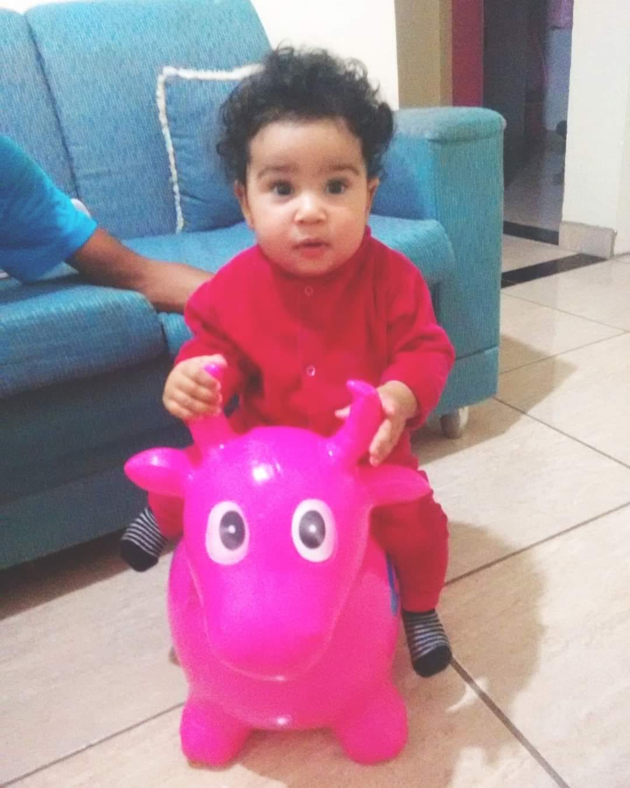
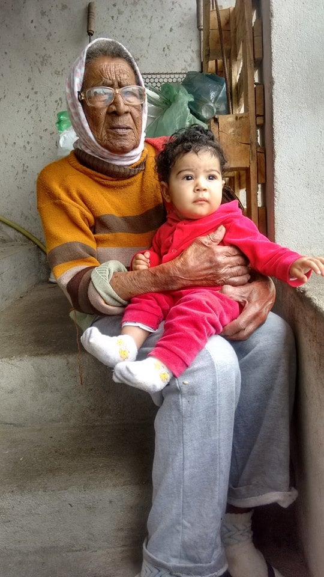

Hoje é um dia muito especial, pois é o seu aniversário! 🎉🎂🎈
Desejo a você um dia repleto de alegria, amor e muitas surpresas. Que este novo ano seja ainda mais incrível do que o anterior.
Você é uma filha maravilhosa, cheia de talentos e bondade. Espero que este dia seja tão especial quanto você é.
Que todos os seus sonhos se realizem e que cada momento seja vivido com intensidade e felicidade.
Parabéns, minha filha querida! 🎉🎈
Com muito carinho,
Papai Gabriel
Emanuelly: Uma Menina Cheia de Aventuras e Amor. No coração de uma família, vive uma grande fonte de alegria, curiosidade e travessuras: Emanuelly, Com seus oito anos de idade, ela traz consigo um mundo de energia e uma alma cheia de vida. Através do brilho travesso em seus olhos, é possível perceber a chama inextinguível da imaginação e da exploração que define essa fase mágica da infância. Emanuelly é uma criança arteira, que encontra aventura em cada canto da casa e cada rua do bairro. Suas travessuras são como pequenas pinceladas de cor em uma tela em branco, trazendo vida e emoção ao cotidiano. Seja construindo castelos de areia no quintal ou inventando histórias mirabolantes com seus brinquedos, ela transforma o mundo com sua criatividade inesgotável. Mas não se engane pela sua esperteza, Emanuelly é também uma menina de grande coração. Seu amor pelo papai é evidente em cada abraço apertado, em cada olhar cheio de admiração. Para ela, o pai é um herói, um protetor, e a simples presença dele traz conforto e segurança em um mundo repleto de desafios e descobertas. Além de amar o papai, Emanuelly tem uma paixão avassaladora por bicicletas e açaí. Ela se torna uma verdadeira exploradora em duas rodas, pedalando pelas ruas com o vento soprando em seu cabelo e um sorriso radiante em seu rosto. E, após cada aventura sobre duas rodas, não há nada que ela ame mais do que saborear um delicioso e gelado açaí, uma recompensa doce por suas travessuras e conquistas. Emanuelly é mais do que apenas uma menina de oito anos. Ela é uma fonte infinita de alegria, amor e energia. Sua natureza arteira e amorosa, seu vínculo especial com o pai e sua paixão pelas aventuras de bicicleta e pelo sabor refrescante do açaí tornam-na única e extraordinária. Em cada travessura, em cada abraço, ela deixa sua marca no coração daqueles que têm o privilégio de conhecê-la.